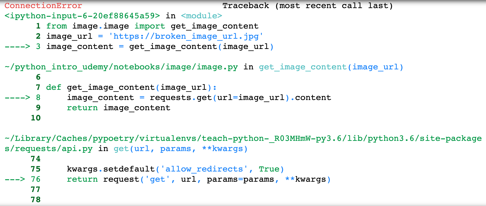

Errors and Exceptions¶
In this section we are going to look at common errors in Python, how they can occur, and how to handle them. These are the type of errors that actually make your code break and stop executing.
Syntax Errors¶
Syntax errors are quite common when you begin coding in Python.
Here is an example where we attempt to write a for loop but we forget
the :.
for i in range(2)
print(i)
File "<ipython-input-2-47dfaf615d55>", line 1
for i in range(2)
^
SyntaxError: invalid syntax
The SyntaxError is the type of error that is raised and the little arrow ^ is pointing
to the first place in the code to where the error is detected. To fix it, we can add the : after the closing bracket.
for i in range(2):
print(i)
0
1
Exceptions¶
There are many types of other errors that can occur in your code even if the code has proper syntax. Errors that are detected in the code during execution are called exceptions.
For the next example we will use the image module we wrote and you will need that virtual environment activated if you want to run this code.
from image.image import get_image_content
image_url = 'https://broken_image_url.jpg'
image_content = get_image_content(image_url)
---------------------------------------------------------------------------
gaierror Traceback (most recent call last)
~/Library/Caches/pypoetry/virtualenvs/teach-python-_R03MHmW-py3.6/lib/python3.6/site-packages/urllib3/connection.py in _new_conn(self)
159 conn = connection.create_connection(
--> 160 (self._dns_host, self.port), self.timeout, **extra_kw
161 )
~/Library/Caches/pypoetry/virtualenvs/teach-python-_R03MHmW-py3.6/lib/python3.6/site-packages/urllib3/util/connection.py in create_connection(address, timeout, source_address, socket_options)
60
---> 61 for res in socket.getaddrinfo(host, port, family, socket.SOCK_STREAM):
62 af, socktype, proto, canonname, sa = res
/usr/local/opt/python/Frameworks/Python.framework/Versions/3.6/lib/python3.6/socket.py in getaddrinfo(host, port, family, type, proto, flags)
744 addrlist = []
--> 745 for res in _socket.getaddrinfo(host, port, family, type, proto, flags):
746 af, socktype, proto, canonname, sa = res
gaierror: [Errno 8] nodename nor servname provided, or not known
During handling of the above exception, another exception occurred:
NewConnectionError Traceback (most recent call last)
~/Library/Caches/pypoetry/virtualenvs/teach-python-_R03MHmW-py3.6/lib/python3.6/site-packages/urllib3/connectionpool.py in urlopen(self, method, url, body, headers, retries, redirect, assert_same_host, timeout, pool_timeout, release_conn, chunked, body_pos, **response_kw)
676 headers=headers,
--> 677 chunked=chunked,
678 )
~/Library/Caches/pypoetry/virtualenvs/teach-python-_R03MHmW-py3.6/lib/python3.6/site-packages/urllib3/connectionpool.py in _make_request(self, conn, method, url, timeout, chunked, **httplib_request_kw)
380 try:
--> 381 self._validate_conn(conn)
382 except (SocketTimeout, BaseSSLError) as e:
~/Library/Caches/pypoetry/virtualenvs/teach-python-_R03MHmW-py3.6/lib/python3.6/site-packages/urllib3/connectionpool.py in _validate_conn(self, conn)
977 if not getattr(conn, "sock", None): # AppEngine might not have `.sock`
--> 978 conn.connect()
979
~/Library/Caches/pypoetry/virtualenvs/teach-python-_R03MHmW-py3.6/lib/python3.6/site-packages/urllib3/connection.py in connect(self)
308 # Add certificate verification
--> 309 conn = self._new_conn()
310 hostname = self.host
~/Library/Caches/pypoetry/virtualenvs/teach-python-_R03MHmW-py3.6/lib/python3.6/site-packages/urllib3/connection.py in _new_conn(self)
171 raise NewConnectionError(
--> 172 self, "Failed to establish a new connection: %s" % e
173 )
NewConnectionError: <urllib3.connection.HTTPSConnection object at 0x1058c8a58>: Failed to establish a new connection: [Errno 8] nodename nor servname provided, or not known
During handling of the above exception, another exception occurred:
MaxRetryError Traceback (most recent call last)
~/Library/Caches/pypoetry/virtualenvs/teach-python-_R03MHmW-py3.6/lib/python3.6/site-packages/requests/adapters.py in send(self, request, stream, timeout, verify, cert, proxies)
448 retries=self.max_retries,
--> 449 timeout=timeout
450 )
~/Library/Caches/pypoetry/virtualenvs/teach-python-_R03MHmW-py3.6/lib/python3.6/site-packages/urllib3/connectionpool.py in urlopen(self, method, url, body, headers, retries, redirect, assert_same_host, timeout, pool_timeout, release_conn, chunked, body_pos, **response_kw)
726 retries = retries.increment(
--> 727 method, url, error=e, _pool=self, _stacktrace=sys.exc_info()[2]
728 )
~/Library/Caches/pypoetry/virtualenvs/teach-python-_R03MHmW-py3.6/lib/python3.6/site-packages/urllib3/util/retry.py in increment(self, method, url, response, error, _pool, _stacktrace)
445 if new_retry.is_exhausted():
--> 446 raise MaxRetryError(_pool, url, error or ResponseError(cause))
447
MaxRetryError: HTTPSConnectionPool(host='broken_image_url.jpg', port=443): Max retries exceeded with url: / (Caused by NewConnectionError('<urllib3.connection.HTTPSConnection object at 0x1058c8a58>: Failed to establish a new connection: [Errno 8] nodename nor servname provided, or not known',))
During handling of the above exception, another exception occurred:
ConnectionError Traceback (most recent call last)
<ipython-input-4-20ef88645a59> in <module>
1 from image.image import get_image_content
2 image_url = 'https://broken_image_url.jpg'
----> 3 image_content = get_image_content(image_url)
~/python_intro_udemy/notebooks/image/image.py in get_image_content(image_url)
6
7 def get_image_content(image_url):
----> 8 image_content = requests.get(url=image_url).content
9 return image_content
10
~/Library/Caches/pypoetry/virtualenvs/teach-python-_R03MHmW-py3.6/lib/python3.6/site-packages/requests/api.py in get(url, params, **kwargs)
74
75 kwargs.setdefault('allow_redirects', True)
---> 76 return request('get', url, params=params, **kwargs)
77
78
~/Library/Caches/pypoetry/virtualenvs/teach-python-_R03MHmW-py3.6/lib/python3.6/site-packages/requests/api.py in request(method, url, **kwargs)
59 # cases, and look like a memory leak in others.
60 with sessions.Session() as session:
---> 61 return session.request(method=method, url=url, **kwargs)
62
63
~/Library/Caches/pypoetry/virtualenvs/teach-python-_R03MHmW-py3.6/lib/python3.6/site-packages/requests/sessions.py in request(self, method, url, params, data, headers, cookies, files, auth, timeout, allow_redirects, proxies, hooks, stream, verify, cert, json)
540 }
541 send_kwargs.update(settings)
--> 542 resp = self.send(prep, **send_kwargs)
543
544 return resp
~/Library/Caches/pypoetry/virtualenvs/teach-python-_R03MHmW-py3.6/lib/python3.6/site-packages/requests/sessions.py in send(self, request, **kwargs)
653
654 # Send the request
--> 655 r = adapter.send(request, **kwargs)
656
657 # Total elapsed time of the request (approximately)
~/Library/Caches/pypoetry/virtualenvs/teach-python-_R03MHmW-py3.6/lib/python3.6/site-packages/requests/adapters.py in send(self, request, stream, timeout, verify, cert, proxies)
514 raise SSLError(e, request=request)
515
--> 516 raise ConnectionError(e, request=request)
517
518 except ClosedPoolError as e:
ConnectionError: HTTPSConnectionPool(host='broken_image_url.jpg', port=443): Max retries exceeded with url: / (Caused by NewConnectionError('<urllib3.connection.HTTPSConnection object at 0x1058c8a58>: Failed to establish a new connection: [Errno 8] nodename nor servname provided, or not known',))
The above error is rather long because the requests library actually tries to
download the image content several times and that is why the error is repeated
more than once. In this case we get a
ConnectionError, MaxRetryError, NewConnectionError, gaierror. There is part of the error message which shows the context in the code where the exception occurred, in the form of a stack traceback. Here is a screen short of one such part of the stack traceback:

In the above screen shot it tells you where the error happened in the code.
First it shows you the error occured at line 3 in the Notebook cell,
image_content = get_image_content(image_url). Next it goes a bit deeper and tells
you the file in which the error occured. In this case it was in the Python file ~/python_intro_udemy/notebooks/image/image.py. The error occurred in line 8 of the file
and within the function get_image_content. Finally, it goes even further into the requests
library source code and says there was an error when using the get function.
When errors occur, it is quite normal for the printout to be long because they show the complete path of the problem. Lets look at some other simpler and yet very common errors built into Python.
Whenever we divide by 0 a ZeroDivisionError is raised.
5 * (10/0)
---------------------------------------------------------------------------
ZeroDivisionError Traceback (most recent call last)
<ipython-input-5-7e814a07d49f> in <module>
----> 1 5 * (10/0)
ZeroDivisionError: division by zero
Whenever we try and access a key in a dictionary that is not present,
a KeyError is raised.
my_dict = {'chris': 35}
my_dict['mike']
---------------------------------------------------------------------------
KeyError Traceback (most recent call last)
<ipython-input-6-139bf41c29c7> in <module>
1 my_dict = {'chris': 35}
----> 2 my_dict['mike']
KeyError: 'mike'
If we try and access a variable that is not defined, a NameError is raised.
4 * my_var + 5
---------------------------------------------------------------------------
NameError Traceback (most recent call last)
<ipython-input-7-ae5db3693465> in <module>
----> 1 4 * my_var + 5
NameError: name 'my_var' is not defined
Here is an example of a TypeError in which we try and add a string
and an integer.
'10' + 10
---------------------------------------------------------------------------
TypeError Traceback (most recent call last)
<ipython-input-8-4ac0513be2aa> in <module>
----> 1 '10' + 10
TypeError: must be str, not int
Here is an example of a ValueError in which we attempt to convert
a string to an integer.
int('chris')
---------------------------------------------------------------------------
ValueError Traceback (most recent call last)
<ipython-input-9-5f10368e8f39> in <module>
----> 1 int('chris')
ValueError: invalid literal for int() with base 10: 'chris'
The above exceptions are just several of the many different built-in exceptions in Python. It will take time to get use to them and familiar with what they mean.
Handling Exceptions¶
In most cases we want our code to raise Exceptions and have errors occur when something goes wrong. This way we can figure out the case that caused the error and potentially change the logic within our code. For example, you may get your code to run successfully for many different cases. But then later on there is an edge case that occurs and the code raises an error. Then you can go back and modify your code to handle that edge case.
However, in some cases we may want to handle selected exceptions directly. We can do this
with the try statement. Let’s look at an example. Suppose we are reading some data into a list and we are expecting
that list to be numbers in the form of strings. In the code below we loop over a list of number strings, convert the string to an integer, add one to the integer, and then print the result.
for x in ['1', '2', '3', '4', '5', 'hello world', '7', '8', None, '10']:
print(int(x) + 1)
2
3
4
5
6
---------------------------------------------------------------------------
ValueError Traceback (most recent call last)
<ipython-input-10-5ddd0df8d286> in <module>
1 for x in ['1', '2', '3', '4', '5', 'hello world', '7', '8', None, '10']:
----> 2 print(int(x) + 1)
3
ValueError: invalid literal for int() with base 10: 'hello world'
The code first fails when we get to the string 'hello world' because we can not convert that to an integer and therefore a ValueError is raised. The code will break and the loop will terminate. In some cases we want to handle such errors, take some action, and let the code continue its execution. For example, in this case we could print a simple message and then continue with the rest of the items in the list.
To do this, we can use a try statement and handle specifically any ValueError that gets raised.
for x in ['1', '2', '3', '4', '5', 'hello world', '7', '8', None, '10']:
try:
print(int(x) + 1)
except ValueError:
print(f'Can not convert "{x}" to integer. Moving onto the next item.')
2
3
4
5
6
Can not convert "hello world" to integer. Moving onto the next item.
8
9
---------------------------------------------------------------------------
TypeError Traceback (most recent call last)
<ipython-input-11-246ae3cda140> in <module>
1 for x in ['1', '2', '3', '4', '5', 'hello world', '7', '8', None, '10']:
2 try:
----> 3 print(int(x) + 1)
4 except ValueError:
5 print(f'Can not convert "{x}" to integer. Moving onto the next item.')
TypeError: int() argument must be a string, a bytes-like object or a number, not 'NoneType'
You can see that the code did not error out on the 'hello world' item and moved on to the next items. But now there is another type of error, a TypeError, because we tried to convert None to an integer. We can also handle this error too like this:
for x in ['1', '2', '3', '4', '5', 'hello world', '7', '8', None, '10']:
try:
print(int(x) + 1)
except ValueError:
print(f'Can not convert "{x}" to integer. Moving onto the next item.')
except TypeError:
print(f'Can not convert "{x}" to integer. Moving onto the next item.')
2
3
4
5
6
Can not convert "hello world" to integer. Moving onto the next item.
8
9
Can not convert "None" to integer. Moving onto the next item.
11
When handling exceptions it is good to handle very specific errors (ValueError or TypeError for example) like we did above
by trying to catch either a ValueError or TypeError. It is possible to catch any generic
exception with except Exception but it is bad practice to have such a generic exception. For example:
for x in ['1', '2', '3', '4', '5', 'hello world', '7', '8', None, '10']:
try:
print(int(x) + 1)
except Exception:
print(f'Can not convert "{x}" to integer. Moving onto the next item.')
2
3
4
5
6
Can not convert "hello world" to integer. Moving onto the next item.
8
9
Can not convert "None" to integer. Moving onto the next item.
11
It’s generally not good to have such a generic exception because it can hide real issues that may need to be handled in a different way.
In genreral, the try statement works like this:
First, you write the the
tryclause which is the block of statements between thetryandexceptkeywords. This code is executed first.
try:
try_clause_code_block
except SomeException:
exception_clause_code_block
If no exceptions occur during the execution of the
try_clause_code_blockthen theexceptclause is skipped and execution of thetrystatement is complete.If an exception occurs during execution of the code in the
try_clause_code_block, the rest of thetryclause is skipped.If the error that is raised matches the exception named after the
exceptkeyword, theexception_clause_code_blockis executed.If the error raised does not match the exception named after the
exceptionkeyword then the codeexception_clause_code_blockdoes not get executed. The exception will be raised.
A
trystatement may have more than one except clause. But only one of the exception blocks can be executed (whichever comes first).
try:
try_clause_code_block
except SomeException1:
exception_clause_code_block1
except SomeException2:
exception_clause_code_block2
except SomeException3:
exception_clause_code_block3
Examples¶
Here are some simple examples of exception handling just to get the hang of how it works.